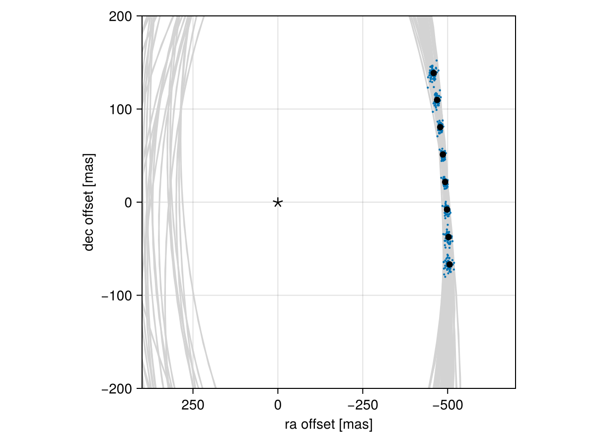

Posterior Predictive Checks
A posterior predictive check compares our true data with simulated data drawn from the posterior. This allows us to evaluate if the model is able to reproduce our observations appropriately. Samples drawn from the posterior predictive distribution should match the locations of the original data.
To demonstrate, we will fit a model to relative astrometry data:
using Octofitter
using Distributions
astrom_like = PlanetRelAstromLikelihood(Table(;
epoch= [50000,50120,50240,50360,50480,50600,50720,50840,],
ra = [-505.764,-502.57,-498.209,-492.678,-485.977,-478.11,-469.08,-458.896,],
dec = [-66.9298,-37.4722,-7.92755,21.6356, 51.1472, 80.5359, 109.729, 138.651,],
σ_ra = fill(10.0, 8),
σ_dec = fill(10.0, 8),
cor = fill(0.0, 8)
))
@planet b Visual{KepOrbit} begin
a ~ truncated(Normal(10, 4), lower=0, upper=100)
e ~ Uniform(0.0, 0.5)
i ~ Sine()
ω ~ UniformCircular()
Ω ~ UniformCircular()
θ ~ UniformCircular()
tp = θ_at_epoch_to_tperi(system,b,50420) # reference epoch for θ. Choose an MJD date near your data.
end astrom_like
@system Tutoria begin
M ~ truncated(Normal(1.2, 0.1), lower=0)
plx ~ truncated(Normal(50.0, 0.02), lower=0)
end b
model = Octofitter.LogDensityModel(Tutoria)
using Random
Random.seed!(0)
chain = octofit(model)Chains MCMC chain (1000×28×1 Array{Float64, 3}):
Iterations = 1:1:1000
Number of chains = 1
Samples per chain = 1000
Wall duration = 6.37 seconds
Compute duration = 6.37 seconds
parameters = M, plx, b_a, b_e, b_i, b_ωy, b_ωx, b_Ωy, b_Ωx, b_θy, b_θx, b_ω, b_Ω, b_θ, b_tp
internals = n_steps, is_accept, acceptance_rate, hamiltonian_energy, hamiltonian_energy_error, max_hamiltonian_energy_error, tree_depth, numerical_error, step_size, nom_step_size, is_adapt, loglike, logpost, tree_depth, numerical_error
Summary Statistics
parameters mean std mcse ess_bulk ess_tail r ⋯
Symbol Float64 Float64 Float64 Float64 Float64 Floa ⋯
M 1.1840 0.0932 0.0040 554.0345 526.0030 0.9 ⋯
plx 49.9998 0.0203 0.0006 1122.8919 601.7476 1.0 ⋯
b_a 11.5582 2.1301 0.1368 248.5054 368.8439 1.0 ⋯
b_e 0.1555 0.1056 0.0057 348.0973 448.3119 1.0 ⋯
b_i 0.6269 0.1502 0.0092 277.4878 347.6187 1.0 ⋯
b_ωy -0.0247 0.7275 0.0572 200.3698 629.2962 1.0 ⋯
b_ωx -0.0185 0.7006 0.0590 166.6166 674.8909 1.0 ⋯
b_Ωy -0.0351 0.7322 0.0991 73.1234 405.3975 1.0 ⋯
b_Ωx 0.0233 0.6983 0.1076 49.1095 327.0941 1.0 ⋯
b_θy 0.0739 0.0103 0.0004 849.2406 635.2607 1.0 ⋯
b_θx -0.9957 0.0968 0.0033 886.1576 673.7771 1.0 ⋯
b_ω -0.2650 1.8202 0.1448 204.1213 494.2086 1.0 ⋯
b_Ω -0.4259 1.8166 0.2407 86.4180 400.7589 1.0 ⋯
b_θ -1.4968 0.0072 0.0002 931.8079 711.2084 1.0 ⋯
b_tp 42953.0390 4677.2229 247.4246 350.5552 495.0580 0.9 ⋯
2 columns omitted
Quantiles
parameters 2.5% 25.0% 50.0% 75.0% 97.5%
Symbol Float64 Float64 Float64 Float64 Float64
M 0.9876 1.1238 1.1839 1.2457 1.3684
plx 49.9615 49.9856 49.9998 50.0137 50.0373
b_a 8.2768 10.1344 11.1915 12.6369 17.0188
b_e 0.0061 0.0697 0.1385 0.2261 0.3841
b_i 0.3078 0.5313 0.6409 0.7330 0.8854
b_ωy -1.0648 -0.7304 -0.1012 0.7155 1.0890
b_ωx -1.0642 -0.6813 -0.0044 0.6576 1.0514
b_Ωy -1.0534 -0.7925 -0.0188 0.7027 1.0517
b_Ωx -1.0781 -0.6133 0.0541 0.6621 1.0582
b_θy 0.0555 0.0667 0.0735 0.0802 0.0945
b_θx -1.2046 -1.0598 -0.9928 -0.9268 -0.8220
b_ω -2.9771 -2.0656 -0.0086 1.0999 2.9495
b_Ω -2.9848 -2.3099 0.1060 1.0098 2.8434
b_θ -1.5107 -1.5017 -1.4968 -1.4918 -1.4823
b_tp 32155.0746 40314.6486 43711.6297 46254.6393 49854.7933
We now have our posterior as approximated by the MCMC chain. Convert these posterior samples into orbit objects:
# Instead of creating orbit objects for all rows in the chain, just pick
# every twentieth row.
ii = 1:20:1000
orbits = Octofitter.construct_elements(chain, :b, ii)50-element Vector{Visual{KepOrbit{Float64}, Float64}}:
Visual{KepOrbit{Float64}, Float64}(KepOrbit(8.8, 0.225, 0.569, 0.828, 0.817, 45700.0, 1.12), 50.00664519550794, 4.1247518043567664e6)
Visual{KepOrbit{Float64}, Float64}(KepOrbit(12.8, 0.0326, 0.678, 2.51, 3.44, 37400.0, 1.15), 50.02249499546046, 4.123444862530718e6)
Visual{KepOrbit{Float64}, Float64}(KepOrbit(11.3, 0.0787, 0.545, -2.41, 1.01, 37300.0, 1.1), 50.01224382388494, 4.1242900583774964e6)
Visual{KepOrbit{Float64}, Float64}(KepOrbit(11.7, 0.262, 0.736, -2.23, 2.65, 40800.0, 1.33), 49.98815064788049, 4.1262778743895316e6)
Visual{KepOrbit{Float64}, Float64}(KepOrbit(8.88, 0.214, 0.476, 1.04, 0.653, 46100.0, 1.25), 49.98375965125514, 4.126640361572331e6)
Visual{KepOrbit{Float64}, Float64}(KepOrbit(10.5, 0.135, 0.487, 0.432, 0.227, 41900.0, 1.03), 50.00665151700161, 4.124751282934283e6)
Visual{KepOrbit{Float64}, Float64}(KepOrbit(12.7, 0.32, 0.679, -2.45, 2.22, 37000.0, 1.14), 49.99361113844947, 4.1258271867735544e6)
Visual{KepOrbit{Float64}, Float64}(KepOrbit(11.3, 0.212, 0.471, -2.37, 2.03, 38400.0, 0.996), 49.99197431737989, 4.1259622732741567e6)
Visual{KepOrbit{Float64}, Float64}(KepOrbit(8.22, 0.22, 0.524, 0.182, 1.33, 46300.0, 1.29), 49.96724720103532, 4.128004073751059e6)
Visual{KepOrbit{Float64}, Float64}(KepOrbit(12.6, 0.0431, 0.724, 0.45, 0.183, 40100.0, 1.15), 50.00320408189247, 4.125035660958659e6)
⋮
Visual{KepOrbit{Float64}, Float64}(KepOrbit(8.44, 0.267, 0.37, 0.605, 0.64, 45400.0, 1.18), 50.04496744272552, 4.121593249832006e6)
Visual{KepOrbit{Float64}, Float64}(KepOrbit(8.99, 0.17, 0.31, -1.35, 2.19, 43900.0, 0.999), 50.006831309159374, 4.124736453001772e6)
Visual{KepOrbit{Float64}, Float64}(KepOrbit(14.0, 0.432, 0.711, -2.57, 2.67, 34800.0, 1.11), 50.00833218955668, 4.124612658909561e6)
Visual{KepOrbit{Float64}, Float64}(KepOrbit(8.75, 0.166, 0.509, -0.295, 1.44, 45400.0, 1.36), 50.03499402104402, 4.1224148025929173e6)
Visual{KepOrbit{Float64}, Float64}(KepOrbit(13.3, 0.31, 0.695, 0.359, 6.06, 37100.0, 1.22), 50.0140083717489, 4.124144549000228e6)
Visual{KepOrbit{Float64}, Float64}(KepOrbit(9.89, 0.207, 0.581, 1.52, 5.16, 42600.0, 1.21), 49.986022492993335, 4.126453550668343e6)
Visual{KepOrbit{Float64}, Float64}(KepOrbit(11.7, 0.155, 0.759, -2.24, 3.47, 42400.0, 1.21), 50.000532683465345, 4.1252560508862273e6)
Visual{KepOrbit{Float64}, Float64}(KepOrbit(17.9, 0.198, 0.866, 0.96, 3.57, 49400.0, 1.15), 50.02120820394479, 4.1235509378146823e6)
Visual{KepOrbit{Float64}, Float64}(KepOrbit(11.3, 0.0363, 0.573, 0.438, 3.85, 49200.0, 0.963), 49.99326410980584, 4.1258558262360487e6)Calculate and plot the location the planet would be at each observation epoch:
using CairoMakie
epochs = astrom_like.table.epoch' # transpose
x = raoff.(orbits, epochs)[:]
y = decoff.(orbits, epochs)[:]
fig = Figure()
ax = Axis(
fig[1,1], xlabel="ra offset [mas]", ylabel="dec offset [mas]",
xreversed=true,
aspect=1
)
for orbit in orbits
Makie.lines!(ax, orbit, color=:lightgrey)
end
Makie.scatter!(
ax,
x, y,
markersize=3,
)
fig
Makie.scatter!(ax, astrom_like.table.ra, astrom_like.table.dec,color=:black, label="observed")
Makie.scatter!(ax, [0],[0], marker='⋆', color=:black, markersize=20,label="")
Makie.xlims!(400,-700)
Makie.ylims!(-200,200)
fig
Looks like a great match to the data! Notice how the uncertainty around the middle point is lower than the ends. That's because the orbit's posterior location at that epoch is also constrained by the surrounding data points. We can know the location of the planet in hindsight better than we could measure it!
You can follow this same procedure for any kind of data modelled with Octofitter.